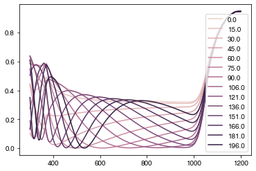
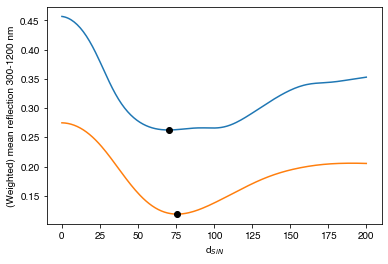
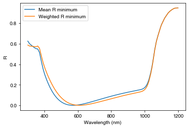
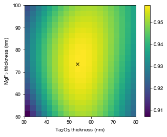

import numpy as np
import matplotlib.pyplot as plt
from solcore import material, si
from solcore.solar_cell import Layer
from solcore.light_source import LightSource
from solcore.absorption_calculator import search_db
from rayflare.transfer_matrix_method import tmm_structure
from rayflare.options import default_options
import seaborn as snsExample 7a: Simple optimization
In a few of the previous examples, we have used anti-reflection coatings. In Example 5a, we introduced a nanophotonic grating for light trapping. But how do you find out the right thickness for the anti-reflection coating layer(s), or the right dimensions for a light-trapping grating? This is where optimization comes in. Here, we will look at a very simple ‘brute-force’ optimization for a single or double-layer ARC, and a more complicated framework for running optimizations using Solcore/RayFlare and a differential evolution algorithm in Example 7b.
Setting up
opts = default_options()
wavelengths = np.linspace(300, 1200, 800)*1e-9
AM15g = LightSource(source_type="standard", version="AM1.5g", output_units="photon_flux_per_m")
spectrum = AM15g.spectrum(wavelengths)[1]
normalised_spectrum = spectrum/np.max(spectrum)
opts.wavelengths = wavelengths
opts.coherent = False
opts.coherency_list = ['c', 'i']
Si = material("Si")()
SiN = material("Si3N4")()
Ag = material("Ag")()
Air = material("Air")()Single-layer ARC
Here, we will calculate the behaviour of a single-layer SiN anti-reflection coating on Si while changing the ARC thickness between 0 and 200 nm. We will consider two values to optimize: the mean reflectance mean_R, and the reflectance weighted by the photon flux in an AM1.5G spectrum (weighted_R). The reason for considering the second value is that it is more useful to suppress reflection at wavelengths where there are more photons which could be absorbed.
We will loop through the different ARC thicknesses in d_range, build the structure for each case, and then calculate the reflectance. We then save the mean reflected and weighted mean reflectance in the corresponding arrays. We also plot the reflectance for each 15th loop (this is just so the plot does not get too crowded).
d_range = np.linspace(0, 200, 200)
mean_R = np.empty_like(d_range)
weighted_R = np.empty_like(d_range)
cols = sns.cubehelix_palette(np.ceil(len(d_range)/15))
plt.figure()
jcol = 0
for i1, d in enumerate(d_range):
struct = tmm_structure([Layer(si(d, 'nm'), SiN), Layer(si('300um'), Si)], incidence=Air, transmission=Ag)
RAT = struct.calculate(opts)
if i1 % 15 == 0:
plt.plot(wavelengths*1e9, RAT['R'], label=str(np.round(d, 0)), color=cols[jcol])
jcol += 1
mean_R[i1] = np.mean(RAT['R'])
weighted_R[i1] = np.mean(RAT['R']*normalised_spectrum)
plt.legend()
plt.show()
We now find at which index mean_R and weighted_R are minimised using np.argmin, and use this to print the ARC thickness at which this occurs (rounded to 1 decimal place).
print('Minimum mean reflection occurs at d = ' + str(np.round(d_range[np.argmin(mean_R)], 1)) + ' nm')
print('Minimum weighted reflection occurs at d = ' + str(np.round(d_range[np.argmin(weighted_R)], 1)) + ' nm')Minimum mean reflection occurs at d = 70.4 nm
Minimum weighted reflection occurs at d = 75.4 nmWe see that the values of \(d\) for the two different ways of optimizing are very similar, but not exactly the same, as we would expect. The minimum in both cases occurs around 70 nm. We can also plot the evolution of the mean and weighted \(R\) with ARC thickness \(d\):
plt.figure()
plt.plot(d_range, mean_R, label='Mean reflection')
plt.plot(d_range[np.argmin(mean_R)], np.min(mean_R), 'ok')
plt.plot(d_range, weighted_R, label='Weighted mean reflection')
plt.plot(d_range[np.argmin(weighted_R)], np.min(weighted_R), 'ok')
plt.xlabel('d$_{SiN}$')
plt.ylabel('(Weighted) mean reflection 300-1200 nm')
plt.show()
And the actual reflectance with wavelength for the two different optimizations:
struct = tmm_structure([Layer(si(d_range[np.argmin(mean_R)], 'nm'), SiN), Layer(si('300um'), Si)], incidence=Air, transmission=Ag)
RAT_1 = struct.calculate(opts)
struct = tmm_structure([Layer(si(d_range[np.argmin(weighted_R)], 'nm'), SiN), Layer(si('300um'), Si)], incidence=Air, transmission=Ag)
RAT_2 = struct.calculate(opts)
plt.figure()
plt.plot(wavelengths*1e9, RAT_1['R'], label='Mean R minimum')
plt.plot(wavelengths*1e9, RAT_2['R'], label='Weighted R minimum')
plt.legend()
plt.xlabel("Wavelength (nm)")
plt.ylabel("R")
plt.show()
We see that the two reflectance curves are very similar.
Double-layer ARC
We will now consider a similar situation, but for a double-layer MgF\(_2\)/Ta\(_2\)O\(_5\) ARC on GaAs. We search for materials in the refractiveindex.info database (see Example 2a), and use only the part of the solar spectrum relevant for absorption in GaAs (in this case, there is no benefit to reducing absorption above the GaAs bandgap around 900 nm). We will only consider the weighted mean \(R\) in this case.
pageid_MgF2 = search_db("MgF2/Rodriguez-de Marcos")[0][0]
pageid_Ta2O5 = search_db("Ta2O5/Rodriguez-de Marcos")[0][0]
GaAs = material("GaAs")()
MgF2 = material(str(pageid_MgF2), nk_db=True)()
Ta2O5 = material(str(pageid_Ta2O5), nk_db=True)()
MgF2_thickness = np.linspace(50, 100, 20)
Ta2O5_thickness = np.linspace(30, 80, 20)
weighted_R_matrix = np.zeros((len(MgF2_thickness), len(Ta2O5_thickness)))
wavelengths_GaAs = wavelengths[wavelengths < 900e-9]
normalised_spectrum_GaAs = normalised_spectrum[wavelengths < 900e-9]
opts.coherent = True
opts.wavelengths = wavelengths_GaAsWe now have two thicknesses to loop through; otherwise, the procedure is similar to the single-layer ARC example.
for i1, d_MgF2 in enumerate(MgF2_thickness):
for j1, d_Ta2O5 in enumerate(Ta2O5_thickness):
struct = tmm_structure([Layer(si(d_MgF2, 'nm'), MgF2), Layer(si(d_Ta2O5, 'nm'), Ta2O5),
Layer(si('20um'), GaAs)],
incidence=Air, transmission=Ag)
RAT = struct.calculate(opts)
weighted_R_matrix[i1, j1] = np.mean(RAT['R'] * normalised_spectrum_GaAs)
# find the row and column indices of the minimum weighted R value
ri, ci = np.unravel_index(weighted_R_matrix.argmin(), weighted_R_matrix.shape)We plot the total absorption (\(1-R\)) in the structure with the optimized ARC, and print the thicknesses of MgF\(_2\) and Ta\(_2\)O\(_5\) at which this occurs:
plt.figure()
plt.imshow(1-weighted_R_matrix, extent=[min(Ta2O5_thickness), max(Ta2O5_thickness),
min(MgF2_thickness), max(MgF2_thickness)],
origin='lower', aspect='equal')
plt.plot(Ta2O5_thickness[ci], MgF2_thickness[ri], 'xk')
plt.colorbar()
plt.xlabel("Ta$_2$O$_5$ thickness (nm)")
plt.ylabel("MgF$_2$ thickness (nm)")
plt.show()
print("Minimum reflection occurs at MgF2 / Ta2O5 thicknesses of %.1f / %.1f nm "
% (MgF2_thickness[ri], Ta2O5_thickness[ci]))
Minimum reflection occurs at MgF2 / Ta2O5 thicknesses of 73.7 / 53.7 nm For these two examples, where we are only trying to optimize one and two parameters respectively across a relatively small range, using a method (TMM) which executes quickly, brute force searching is possible. However, as we introduce more parameters, a wider parameter space, and slower simulation methods, it may no longer be computationally tractable.